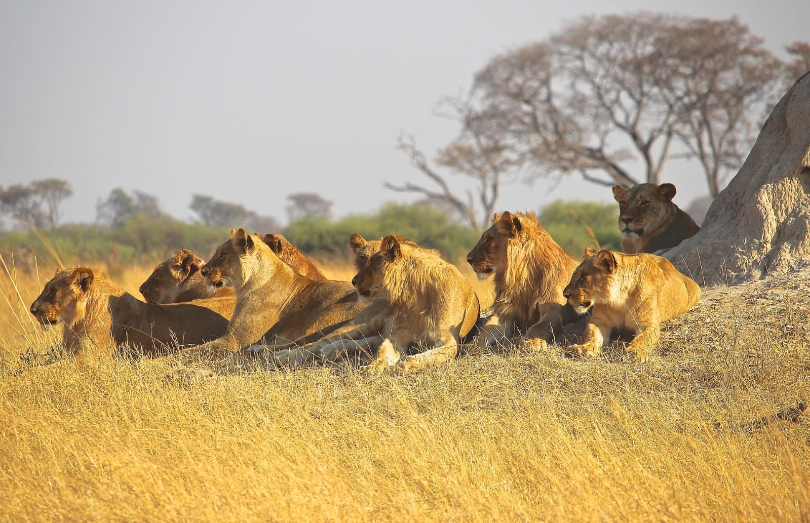

La industria cultural y producciones como "El Rey León" instauraron la idea de una jerarquía animal encabezada por un rey. Sin embargo, esta visión de liderazgo es puramente una proyección humana, impulsada principalmente por Disney.

Puntos Clave de Debate
- Liderazgo Funcional: En la naturaleza no existen "reyes" que gobiernen todo lo que 'el sol toca'. Los animales siguen líderes funcionales capaces de asegurar la supervivencia.
- El Mito del Hábitat: El león no vive en la selva, sino en la sabana. En las selvas asiáticas o americanas, los depredadores máximos son el tigre y el jaguar; e incluso en las propias sabanas húmedas, el control pertenece a los cocodrilos.